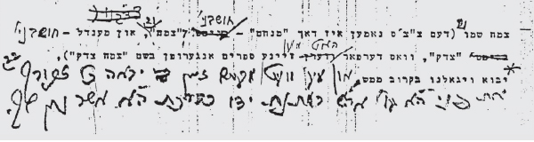

Yechi Ha’melech – The 1000Th Week
The first Shabbos after Gimmel Tammuz 5754, the first issue of Yechi HaMelech was published and revived the Chassidim. * A thousand weeks passed since then and every week a booklet is published packed with excerpts from sichos which nourish the faith of the Chassidim. * R ’ Menachem Mendel Blinitzky spoke with Beis Moshiach about the new projects, along with the sorrow over having reached the thousandth issue and still not seeing the Rebbe .
R’ Menachem Mendel BlinitzkyOne thousand weeks have passed since Gimmel Tammuz 5754 [as of this writing], the day Chassidim stood expectantly and with one prayer: Yechi HaMelech! Since then, a new issue of Yechi HaMelech is published every week with excerpts from sichos about Moshiach and Geula, with an emphasis on sichos pertaining to that week’s parsha and timely matters. In the years that passed since Gimmel Tammuz, Lubavitchers have gotten used to seeing the Yechi HaMelech booklets in shul every Shabbos.
Right after Gimmel Tammuz 5754, a group of askanim, mashpiim and rabbanim met and discussed what to do to strengthen the emuna of the Chassidim in a time of confusion. During the meeting, R’ Shloma Majeski and R’ Menachem Gerlitzky suggested collecting the Rebbe’s sichos on inyanei Moshiach and Geula and publicizing them. They also selected portions of sichos that were said in the first years of the Rebbe’s nesius, in which the Rebbe spoke about the eternal faith in the Nasi Ha’dor even if he is not seen, and about the role of the 7th generation. Everyone in the room immediately agreed that these sichos should be distributed as booklets starting with the following Shabbos.
The first booklet was prepared for printing within a few days and despite the work this entailed, it was published for the Shabbos following Gimmel Tammuz. When the booklets were distributed in 770, one could see the chayus it generated among the numerous Chassidim who were there. Thousands of Chassidim who read the sichos felt the Rebbe’s words revive their emuna p’shuta that everything the Rebbe said would come to pass. The booklet included excerpts from the last sichos the Rebbe said, in which the Rebbe spoke about the role of our generation.
It turned out that some of the sichos were not familiar to the broader public and many of Anash. Many people thanked those who published it and said it was the first time they were opening the sichos and reading the Rebbe’s words inside, black on white. Consequently, it was decided to continue producing booklets with sichos having to do with the topic of the Nasi Ha’dor and the eternal aspect of the 7th generation.
MIRACLES, DESPITE THE FINANCIAL DIFFICULTIES
The mashpia, R’ Dovid Kahanov, worked on compiling the sichos and produced a product that strengthened the faith of the Chassidim at that time. Every Shabbos, the booklet generated much response amongst the Chassidim and thousands found in it a source of consolation and encouragement in the Rebbe’s words that our generation is the last of galus and the first of Geula, and our not seeing the Rebbe is only a physical concealment.
Since Gimmel Tammuz 5754, the booklet Yechi HaMelech has been published every week. At a certain point, the editorial board decided to make it an international project and to have it distributed in shuls of Anash all over the world every week. This was an ambitious plan because financial difficulties threatened to stop the publishing altogether. But in the end, it never happened that the booklet wasn’t published.
The members of the editorial board from the early years can tell of many people who donated money to print the booklet; there were some unusual ways in which help arrived. One time, it was a bachelor in his forties who got involved and within a few weeks, he became engaged. Often it was childless couples or others who needed help in their personal matters.
Whoever was involved with these booklets, and contributed money toward the printing, experienced miraculous salvation. Word got around and many people began to dedicate an issue in the merit of their loved ones. Thanks to these donations, 1000 issues of the kuntres have been printed.
ALL UNEDITED SICHOS ABOUT MOSHIACH IN ONE VOLUME
For the first year, R’ Dovid Kahanov worked on producing the booklet. Then he looked for someone to take it over and expand it. R’ Menachem Mendel Blinitzky, who was a bachur at the time in 770, was selected.
Since then, R’ Blinitzky has produced the booklet all these years. In a conversation with Beis Moshiach regarding the 1000th issue, he said that Sichos Kodesh B’Inyonei Geula U’Moshiach is about to be published. It contains a rare collection of all the sichos about inyanei Moshiach and Geula that were translated by the editorial staff of Yechi HaMelech and publicized for the first time in Lashon Ha’kodesh in issues of Yechi HaMelech.
It is a veritable treasure house. R’ Levi Nisselevitz and Guy Cantor worked to compile and publish the book. It is a first among s’farim that compile the Rebbe’s teachings, because this is the first time a complete compilation of these sichos in Hebrew is being published.
There is another book about to be published which is a collection of hundreds of the Rebbe’s handwritten responses.
“Many of these responses have to do with Moshiach and Geula, and we see that Anash particularly enjoy this column,” said R’ Blinitzky.
R’ Reuven Kupchik, the secretary of Agudas Chassidei Chabad in Eretz Yisroel, is behind these new projects and the editing of Yechi HaMelech. He is very devoted to this work and feels a sense of mission in strengthening the emuna of Chassidim in what the Rebbe said, thus providing a “straight path” toward bringing Moshiach.
SHIURIM IN SHULS
Over the years, dozens of shiurim in inyanei Moshiach and Geula in Yechi HaMelech have been started, especially on Shabbos after the davening. For example, in the Yisroel Aryeh Leib shul in the Levi Yitzchok neighborhood of Kfar Chabad, for over fifteen years now, everybody in the shul learns the first sicha in the kuntres after the davening and before the farbrengen.
It sometimes happens that the topic of the sicha ends up being the focus of the farbrengen that follows the learning. In the Chabad shul in Migdal HaEmek, a shiur was started a few years ago in Yechi HaMelech after Kabbalas Shabbos. This way, the material that is learned ends up being reviewed at the Shabbos table.
DISCOVERIES
Over the years, the kuntres expanded and new sections were added, like the one with a handwritten response from the Rebbe, published for the first time, and a column on shleimus ha’aretz. The editors of Yechi HaMelech were the ones who did the most extensive research on the subject, in the Rebbe’s sichos, about shleimus ha’aretz. They even unearthed dozens of yechiduyos and quotes from the Rebbe to individuals on the topic of shleimus ha’aretz.
One of these discoveries was a quote of the Rebbe to R’ Seidman, that any government that will talk about dividing Yerushalayim will not last, prophetic words that were fulfilled.
The kuntres also publicized all the Rebbe’s editorial notes on the sichos from 5751-5752. When this was publicized, it made waves in Chabad and made possible a glimpse into the Rebbe’s work in editing these unique sichos with the prophecy that this is the time for the Geula.

For example, every week the booklet arrives in Australia and Los Angeles, even though no other Chabad magazine manages to get to them in a timely fashion every week. R’ Sholom Ber Dickstein in Melbourne and R’ Yossi Shagalov in Los Angeles are responsible for printing it in those cities. Hundreds of copies are printed.
Thousands of copies of the booklet are also distributed every week via the mail system so that whoever wants it receives a copy in his mailbox and has it for Shabbos.
“We consider distributing this booklet very important,” said R’ Blinitzky, “but at the same time, we are not happy about having reached the 1000 milestone. We ask and demand that we be able to shout ‘Yechi HaMelech’ with the immediate hisgalus of the Rebbe.”
Sholom Ber Crombie. "Yechi Ha’melech – The 1000Th Week." Beis Moshiach, no. 895 (September 17, 2013).